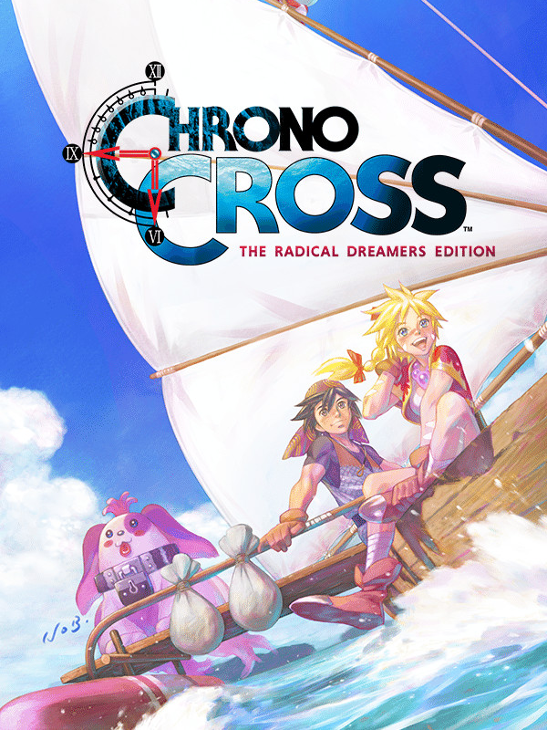

CHRONO CROSS: THE RADICAL DREAMERS EDITION
CHRONO CROSS: THE RADICAL DREAMERS EDITION
Details
|  | |
| Playtime | 14h 21m 0s |
| Last Activity | Never |
| Added | 12/30/2023 6:40:47 |
| Modified | 12/30/2023 7:04:25 |
| Completion Status | Played |
| Library | Steam |
| Source | Steam |
| Platform | PC (Windows) |
| Release Date | 4/7/2022 |
| Community Score | 90 |
| Critic Score | 80 |
| User Score | |
| Genre | Adventure Role-playing (RPG) |
| Developer | Square Enix |
| Publisher | Square Enix |
| Feature | Single Player |
| Links | Steam Official |
| Tag | |
Description
"CHRONO CROSS: THE RADICAL DREAMERS EDITION" is a remaster of "CHRONO CROSS".
The 3D models have been upgraded to HD, new illustrations have been added, and all kinds of new features are now included. Additionally, the game that formed the bedrock of the story, "RADICAL DREAMERS - Le Trésor Interdit -", is included in this edition!

Utilising an innovative turn-based style battle system, CHRONO CROSS is a unique RPG that follows the protagonist “Serge” as he crosses time on his quest to save himself dying in a parallel universe.
Those who purchase the game will also receive a CHRONO CROSS wallpaper!

・Refined character illustrations
・Higher-quality background music
・Switch enemy encounters on or off
・Background filter feature
・Battle enhancement features to make combat easier
・Auto-battle function
・Switch between imitation pixel font and HD font
・Change screen resolution

*You can switch between the new and old versions of the 3D models and illustrations.
*The 3D models, illustrations, font and background filter cannot be toggled separately. They will all be switched together.
The 3D models have been upgraded to HD, new illustrations have been added, and all kinds of new features are now included. Additionally, the game that formed the bedrock of the story, "RADICAL DREAMERS - Le Trésor Interdit -", is included in this edition!
CHRONO CROSS is an RPG that transcends time and space, unfolding across two interlinked parallel worlds.
With over 40 party members to meet, people and dimensions will intertwine in this epic drama about the planet itself.Utilising an innovative turn-based style battle system, CHRONO CROSS is a unique RPG that follows the protagonist “Serge” as he crosses time on his quest to save himself dying in a parallel universe.
Those who purchase the game will also receive a CHRONO CROSS wallpaper!
New Features in the Remastered Edition
・3D models converted to HD・Refined character illustrations
・Higher-quality background music
・Switch enemy encounters on or off
・Background filter feature
・Battle enhancement features to make combat easier
・Auto-battle function
・Switch between imitation pixel font and HD font
・Change screen resolution
RADICAL DREAMERS - Le Trésor Interdit -
"RADICAL DREAMERS - Le Trésor Interdit -" was released in 1996 as a standalone game, and has not been easily accesible for play in recent years. Players can experience the story that went on to become the basis for CHRONO CROSS in an audio novel format. Here, an alternate story of the RADICAL DREAMERS, a group of three thieves - Serge, Kid and Magil - unfolds in a parallel world.*You can switch between the new and old versions of the 3D models and illustrations.
*The 3D models, illustrations, font and background filter cannot be toggled separately. They will all be switched together.